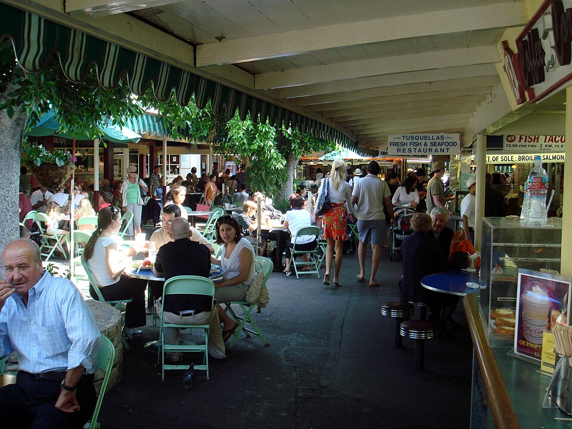

El impacto de comprar directo del productor local
Cada vez que eliges comprar productos frescos directamente desde el campo, tu decisión tiene un impacto que va mucho más allá de tu mesa. En este artículo te contamos por qué comprar local es una de las formas más simples de contribuir a un futuro más sostenible.
Menos kilómetros, más frescura
Al reducir la distancia entre el campo y tu hogar, los productos llegan más frescos y se disminuyen las emisiones de CO2 asociadas al transporte de larga distancia. Esto es parte de lo que en HuertoHogar llamamos "huella de carbono reducida".
Apoyo directo a las comunidades agrícolas
Comprar directamente a productores locales permite que una mayor parte del valor de la venta llegue a quienes realmente cultivan la tierra, fortaleciendo la economía de comunidades rurales en distintas regiones de Chile.
Prácticas agrícolas más sostenibles
Muchos de nuestros productores trabajan con técnicas orgánicas, evitando el uso excesivo de pesticidas y promoviendo el cuidado del suelo a largo plazo. Esto se traduce en productos más saludables para ti y para el medioambiente.
Una cadena de confianza más corta
Cuando conoces el origen de tus alimentos, es más fácil confiar en su calidad. En cada ficha de producto de HuertoHogar podrás encontrar información sobre su procedencia y las prácticas utilizadas en su cultivo.
Súmate al cambio: cada compra en HuertoHogar apoya a familias productoras a lo largo de todo Chile. Descubre nuestros productos aquí.